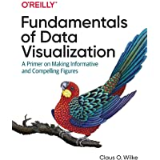
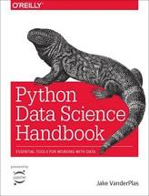
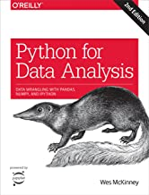
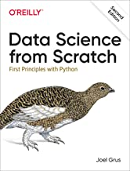
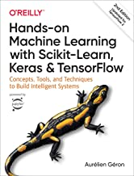

Data Science Resources
Data Science is one of the most popular areas of programming right now, and it’s easy to understand why. There’s a lot of data available to work with, and the better we understand that data the more we can do with it.
Python Crash Course just scratches the surface of what you can do with Python in this field. If you’d like to go further with Python in Data Science, there are a large number of resources available. I hope this helps you figure out where to go next, and if you have feedback about any of these recommendations please don’t hesitate to reach out.
Note: Some of the resources mentioned in the General Python Resources have sections focused on data science. I won’t repeat those resources here, but you should check them out as well.
Books and Print Resources
Fundamentals of Data Visualization, by Claus O. Wilke
This first recommendation is non-technical, because working with data is more than just a technical endeavor. When we present data, we use it to tell a story. Even if you only work with raw data and someone else creates visualizations based on your work, you are still involved in using data to tell a story. And the stories we tell with data impact people’s lives more and more all the time.
Fundamentals of Data Visualization is language-agnostic - there’s no code in the book. Other texts mentioned here will show you how to change the colors in your visualizations; this text will tell you when and why to change the colors, and how that will impact the stories your data will tell.
You can read Fundamentals of Data Visualization through O’Reilly’s online platform, or you can buy it from Barnes and Noble or Amazon. You can also see all of the visualizations in the book, and an earlier draft of the text, at the author’s website.

Python Data Science Handbook, by Jake VanderPlas
Jake VanderPlas has been involved in the Python data science and visualization community for a long time. He has given many talks, and contributed to a number of prominent open source libraries in this area. Python Data Science Handbook came out in December of 2016, but it’s still receiving strong reviews. the book’s author hasn’t read the book, but the book’s author has attended many of Jake’s talks and learned a great deal from following his work. This book covers common Python data science tools, loading and processing data, visualizing data, and getting started with machine learning. When the book’s author has time to do more reading, this is probably the next data science book I’ll work through.
You can read Python Data Science Handbook through O’Reilly’s online platform, or you can buy it from Barnes and Noble or Amazon. You can also find the entire text online at the author’s site.

Python for Data Analysis, by Wes McKinney
Wes McKinney is the creator of pandas, a prominent Python library for loading and working with raw data. Wes knows pandas inside and out, so the information is accurate and reliable. There’s some criticism that the material is dry and just like reading documentation, but if you like books better than documenation this book will probably be worthwhile. If you want to read a more detailed comparison between this book and Python Data Science Handbook, there’s a nice writeup here.
You can read Python for Data Analysis through O’Reilly’s online platform, or you can buy it from Barnes and Noble or Amazon. You can also find the code for the book online at github.com/wesm/pydata-book/.

Data Science from Scratch, by Joel Grus
Data Science from Scratch should be a good followup to PCC if you’re new to programming and data science. With the understanding of Python you’ve gained from PCC, you should be able to follow the code examples and learn the more data science-focused concepts the book presents. If you already understand data science and machine learning concepts and want to focus on using the latest libraries to implement these methods, a book like Hands-On Machine Learning with Scikit-Learn, Keras, and TensorFlow is proably a better fit.
You can read Data Science from Scratch through O’Reilly’s online platform, or you can buy it from Barnes and Noble or Amazon. You can see the table of contents, and you can find the code for the book at the author’s GitHub site.

Hands-On Machine Learning with Scikit-Learn, Keras, and TensorFlow (2nd Edition), by Aurélien Géron
This book focuses on using the Scikit-Learn and TensorFlow libraries to do applied machine learning work. If you want to get straight to the point of using machine learn processes in code, this is probably a good book to consider.
You can read Hands-On Machine Learning with Scikit-Learn, Keras, and TensorFlow through O’Reilly’s online platform, or you can buy it from Barnes and Noble or Amazon. You can also read the table of contents here.

Data Science Tools and Libraries
If you’re interested in data science using Python, there are a nubmer of tools and libraries you should be aware of. All of these tools are covered to differing degrees in the books above, and whichever resources you choose to work from you should be aware of these different libraries.
Jupyter Notebooks and IPython
Jupyter Notebooks are a really powerful tool with many uses, and one of the most prominent uses is exploratory data analysis. Jupyter Notebooks run in a browser, and they’re made up of cells. Each cell can be a code cell or a text cell. When a code cell is run, all the variables and objects created in that cell are then available to the other code cells in the notebook. Text cells are implemented in markdown, a text-based formatting language that’s used extensively in technical documentation work.
Jupyter Notebooks are prominent in data analysis and scientific fields becasuse you can write all the explanatory text you want around your code. They’re not perfect; you can sometimes run into difficulty when code cells affect each other in unexpected ways. Code cells can also be run in any order; this is good most of the time, but can generate reproducibilty issues without a clear set of guidelines for how a notebook is used.
IPython is an enhanced version of a Python terminal session. Jupyter Notebooks are built on top of IPython, but IPython itself is still used in many areas.
The Jupyter homepage is at jupyter.org, and the official documentation is here. The documentation for IPython is here.
pandas
The pandas library is a critical tool in the Python data science ecosystem. pandas is used to load, clean, and analyze data before feeding the data into a visualization package. It’s also heavily used in machine learning applications.
The homepage for pandas is at pandas.pydata.org.
NumPy
NumPy is a math-focused Python package which focuses on making a wide range of mathematical operations efficient and easy to work with from within Python. For example, NumPy offers an efficient and powerful representation of multidimensional arrays, as well as providing an interface for working with mathematical code written in other languages such as Fortran and C++. Many other Python data science projects depend on NumPy; even if you rarely work with NumPy directly, you’re probably using it under the hood through the other data science-focused libraries you’re working with.
The NumPy homepage is at numpy.org.
Scikit-Learn
Scikit-Learn is a library focused on implementing machine learning algorithms. It’s used for classification, regression, clustering, modeling, and more.
The homepage is at scikit-learn.org.
PyTorch
PyTorch is another Python machine learning library, focused on deep learning and working with larger datasets.
The homepage is at pytorch.org.
TensorFlow
TensorFlow was originally developed for internal use at Google, and was later released for public use. TensorFlow is focused on deep learning, and working with larger data sets.
The homepage for TensorFlow is at tensorflow.org.
Keras
Keras is a neural network library written in Python. Keras is built on top of TensorFlow, and can make it simpler to work with TensorFlow. Keras can also be used as an interface to other deep learning libraries in addition to TensorFlow.
The homepage is at keras.io.
Anaconda
Anaconda is a Python distribution that includes many of the most commonly used data science libaries such as Jupyter, NumPy, pandas, Matplotlib, SciPy, and many others. It also comes with its own package manager, conda, which is used in place of pip to install packages. There are free and paid versions of Anaconda, as well as a smaller version called Miniconda.
The home page for Anacaonda is at anaconda.com.
Podcasts
Towards Data Science
Towards Data Science is a group that produces data-science related articles, newsletters, and now a podcast. I’ve listened to one episode so far about building a career in data science, and it was really good. They’re at 34 episodes as of this writing.
You can find a list of episodes here, and a brief description of their podcast series here. The home page for TDS is at towardsdatascience.com.
Data Skeptic
Data Skeptic is a weekly podcast covering a variety of topics in the data science and AI world.
Listen at dataskeptic.com.
Data Stories
Data Stories focuses on data visualization. There’s a balance of technical conversations about how to produce visualizations, and discussions of what people take away from the visualizations we produce. There are currently 160 episodes.
Listen at datastori.es.
Women in Data Science
Women are significantly underrepresented in data science, and it’s important to highlight their perspectives and their work.
Listen at widsconference.org.
AI in Business
AI in Business focuses on the use of AI and data science in businesses.
Listen at techemergence.libsyn.com.
Talking Machines: Human Conversations About Machine Learning
This is a long running podcast with a focus on helping technical and non-technical people understand the impact of data science on the world.
Listen at talkingmachines.com.
More Podcasts
There are more data science podcasts than the book’s author says he can review indidivually. For additional recommendations, see some recommendations from Real Python, from Towards Data Science, and from Analytics Vidhya. If you have specific podcasts that you think would be of interest to PCC readers, please let me know.
Talks
There are so many data science-focused talks it’s hard to make recommendations, but here are a few to get you started:
Put down the deep learning: When not to use neural networks and what to do instead, by Rachael Tatman (PyCon 2019)
Once people become aware of machine learning techniques, they’re tempted to throw it at everything. This talk is a reminder that in many situations, simpler approaches are more appropriate.
Watch it on YouTube.
The Python Visualization Landscape, by Jake VanderPlas (PyCon 2017)
Jake Vanderplas is the author of Python Data Science Handbook, and has contributed to a number of prominent Python data science packages. Here he gives a great overview of the various Python visualization libraries, explaining their indvidual strengths and why they each came to be.
Watch on YouTube. You can also find a list of his other talks here.
Python Data Sonification for Science and Discovery, by Erin Braswell (PyCon 2018)
In this talk, Erin Braswell shows how data can be turned into sound, which is sometimes a better way to identify patterns than through visualization.
Watch it on YouTube.